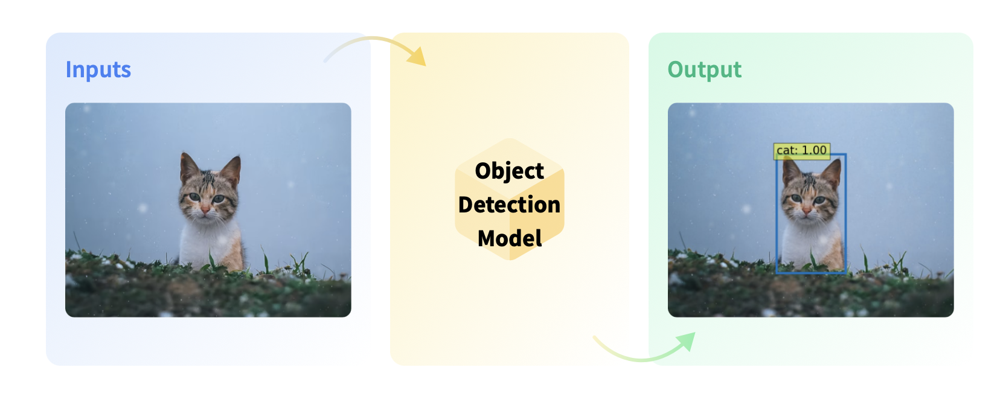
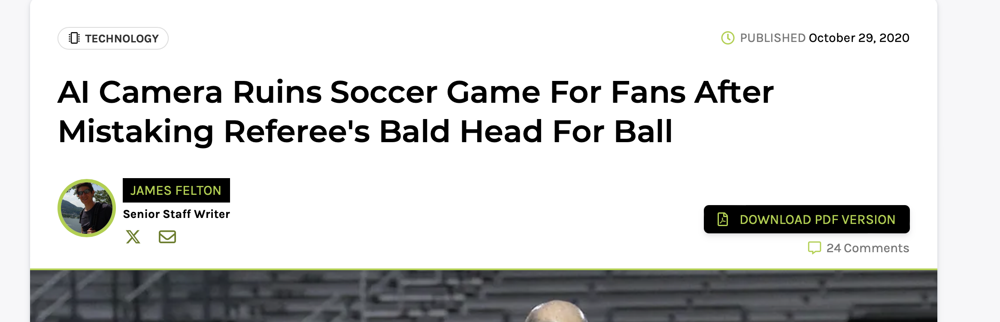
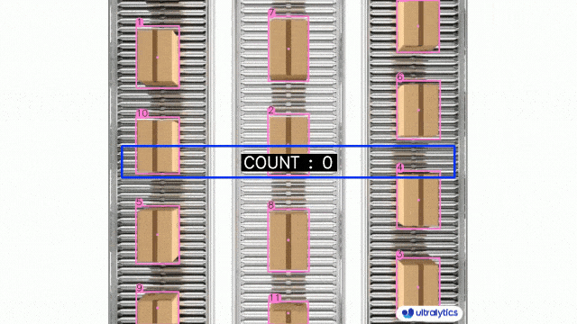
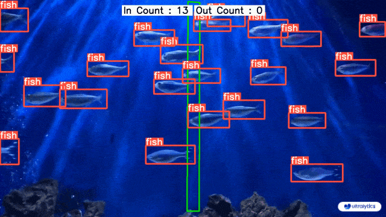
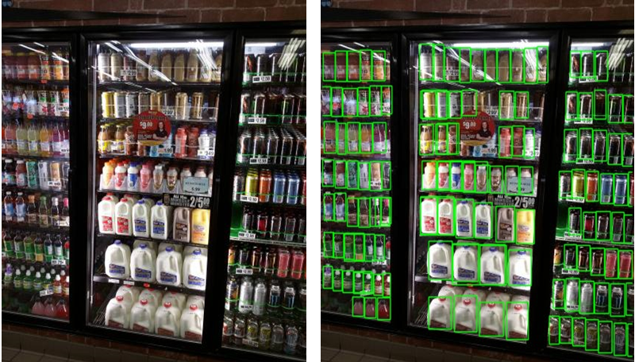

Object Detection#
Object detection is the computer vision task of detecting instances (such as humans, buildings, or cars) in an image. Object detection models receive an image as input and output coordinates of the bounding boxes and associated labels of the detected objects. An image can contain multiple objects, each with its own bounding box and a label (e.g. it can have a car and a building), and each object can be present in different parts of an image (e.g. the image can have several cars).
This is a diagram of the object detection task:

Use Cases#
Autonomous Driving#
Object Detection is widely used in computer vision for autonomous driving. Self-driving cars use Object Detection models to detect pedestrians, bicycles, traffic lights and road signs to decide which step to take.


Object Tracking in Sports Analytics#
Object Detection models are widely used in sports where the ball or a player is tracked for monitoring and refereeing during matches.

 Reference: https://www.iflscience.com/ai-camera-ruins-soccar-game-for-fans-after-mistaking-referees-bald-head-for-ball-57628
Image Search#
Object Detection models are widely used in image search. Smartphones use Object Detection models to detect entities (such as specific places or objects) and allow the user to search for the entity on the Internet. This combines object detection + semantic search.
References:
Object Counting#
Object Detection models are used to count instances of objects in a given image, this can include counting the objects in warehouses or stores, or counting the number of visitors in a store. They are also used to manage crowds at events to prevent disasters.
 

Object Detection in Retail#
We can check if an item is in stock or not, and check which items are most attractive to customers.

Object Detection with the Transformers Library#
The HuggingFace Transformers library provides a wide range of pre-trained models, on top of PyTorch.
You can see all the available models in the model Hub: https://huggingface.co/models.
To use in Python, first, you need to install the following libraries:
#!pip install transformers opencv-python pillow
from transformers import AutoImageProcessor, AutoModelForObjectDetection
import torch
import numpy as np
import cv2
import matplotlib.pyplot as plt
import random
from PIL import Image, features
import requests
We load a pre-trained object detection model and use it to detect objects in frames.
One of the most popular neural network architectures is the YOLO (You Only Look Once) model. YOLO is a state-of-the-art, real-time object detection system that is extremely fast and accurate. It uses a single convolutional neural network to predict bounding boxes and class probabilities directly from full images.
In the HuggingFace Hub, there are already pre-trained YOLO models that we can use: https://huggingface.co/models?pipeline_tag=object-detection&sort=trending&search=yolos
image_processor = AutoImageProcessor.from_pretrained("hustvl/yolos-small")
model = AutoModelForObjectDetection.from_pretrained("hustvl/yolos-small")
Could not find image processor class in the image processor config or the model config. Loading based on pattern matching with the model's feature extractor configuration. Please open a PR/issue to update `preprocessor_config.json` to use `image_processor_type` instead of `feature_extractor_type`. This warning will be removed in v4.40.
The `max_size` parameter is deprecated and will be removed in v4.26. Please specify in `size['longest_edge'] instead`.
We define a function to compute the predictions of an object detection model
def inference(image, verbose = False, confidence_threshold = 0.9):
inputs = image_processor(images=image, return_tensors="pt")
inputs.to(model.device)
outputs = model(**inputs)
# convert outputs (bounding boxes and class logits)
target_sizes = torch.tensor([image.size[::-1]])
results = image_processor.post_process_object_detection(outputs, threshold=confidence_threshold, target_sizes=target_sizes)[
0
]
# transform from Tensor to list
results = {k:v.tolist() for k,v in results.items()}
results["classes"] = [model.config.id2label[label_idx] for label_idx in results["labels"]]
if verbose:
for score, label, box in zip(results["scores"], results["labels"], results["boxes"]):
box = [round(i, 2) for i in box]
print(
f"Detected {model.config.id2label[label]} with confidence "
f"{round(score, 3)} at location {box}"
)
return results
def load_image_from_url(url):
image = Image.open(requests.get(url, stream=True).raw)
return image
url = "http://images.cocodataset.org/val2017/000000039769.jpg"
image = load_image_from_url(url)
image

prediction = inference(image, verbose=True)
Detected remote with confidence 0.999 at location [331.84, 80.54, 369.95, 188.06]
Detected remote with confidence 0.98 at location [39.48, 69.42, 179.8, 115.9]
Detected cat with confidence 0.998 at location [343.47, 19.76, 638.27, 370.82]
Detected couch with confidence 0.987 at location [0.0, -0.04, 639.89, 475.76]
Detected cat with confidence 0.985 at location [13.11, 55.67, 310.92, 467.06]
prediction
{'scores': [0.999083399772644,
0.9801346659660339,
0.9977501034736633,
0.9874654412269592,
0.9847894906997681],
'labels': [75, 75, 17, 63, 17],
'boxes': [[331.84381103515625,
80.54402160644531,
369.95458984375,
188.05789184570312],
[39.48357391357422, 69.4197769165039, 179.8029327392578, 115.90450286865234],
[343.47174072265625,
19.763202667236328,
638.268310546875,
370.8185729980469],
[0.00186920166015625,
-0.03772258758544922,
639.8915405273438,
475.759033203125],
[13.113794326782227,
55.66593551635742,
310.92352294921875,
467.05694580078125]],
'classes': ['remote', 'remote', 'cat', 'couch', 'cat']}
# matplotlib functions to plot bounding boxes in the image
def add_one_box(bbox, image, color=None, label=None, line_thickness=None):
"""
bbox in (x1,y1,x2,y2) format"""
# Plots one bounding box on image img
image = image.copy()
tl = line_thickness or round(
0.002 * (image.shape[0] + image.shape[1]) / 2) + 1 # line/font thickness
color = color or [random.randint(0, 255) for _ in range(3)]
c1, c2 = (int(bbox[0]), int(bbox[1])), (int(bbox[2]), int(bbox[3]))
cv2.rectangle(image, c1, c2, color, thickness=tl, lineType=cv2.LINE_AA)
if label:
tf = max(tl - 1, 1) # font thickness
t_size = cv2.getTextSize(label, 0, fontScale=tl / 3, thickness=tf)[0]
c2 = c1[0] + t_size[0], c1[1] - t_size[1] - 3
cv2.rectangle(image, c1, c2, color, -1, cv2.LINE_AA) # filled
cv2.putText(image, label, (c1[0], c1[1] - 2), 0, tl / 3,
[225, 255, 255], thickness=tf, lineType=cv2.LINE_AA)
return image
def add_boxes_on_image(image, bboxes, classes, class2color = None ):
"""
This function will add rectangle boxes on the images.
"""
image = image.copy()
#image = cv2.imread(image_path)
try:
height, width, channels = image.shape
except:
raise ValueError('no shape info.')
box_number = 0
for bbox, class_label in zip(bboxes, classes):
if class2color is not None:
color = class2color[class_label]
else:
color = None
image = add_one_box(bbox, image, color=color,
label=class_label, line_thickness=None)
# cv2.imwrite(save_file_path, image)
box_number += 1
return image
image_with_boxes = add_boxes_on_image(np.array(image),
prediction["boxes"],
prediction["classes"])
plt.figure(figsize=(15, 15))
plt.imshow(image_with_boxes)
plt.show()
Another example…
url = "https://estaticos-cdn.prensaiberica.es/clip/8cda21be-301a-4574-9299-01069c3a8796_16-9-discover-aspect-ratio_default_0.jpg"
image = load_image_from_url(url)
image
image.size
(1200, 675)
prediction = inference(image, verbose=True)
Detected person with confidence 0.92 at location [812.92, 83.47, 903.28, 188.97]
Detected person with confidence 0.999 at location [91.07, 67.43, 700.57, 667.98]
Detected sports ball with confidence 0.999 at location [372.12, 627.48, 470.15, 674.66]
Detected person with confidence 0.908 at location [759.85, 75.88, 841.32, 181.21]
Detected person with confidence 0.994 at location [879.29, 201.67, 1177.63, 656.95]
Detected person with confidence 0.998 at location [708.89, 174.54, 985.51, 655.56]
image_with_boxes = add_boxes_on_image(np.array(image),
prediction["boxes"],
prediction["classes"])
plt.figure(figsize=(15, 15))
plt.imshow(image_with_boxes)
plt.show()
We can increase the confidence threshold of the output of the model to reduce the number of detections. Thus, we will be more conservative in our predictions:
prediction = inference(image, verbose=True, confidence_threshold=0.99)
image_with_boxes = add_boxes_on_image(np.array(image),
prediction["boxes"],
prediction["classes"])
plt.figure(figsize=(15, 15))
plt.imshow(image_with_boxes)
plt.show()
Detected person with confidence 0.999 at location [91.07, 67.43, 700.57, 667.98]
Detected sports ball with confidence 0.999 at location [372.12, 627.48, 470.15, 674.66]
Detected person with confidence 0.994 at location [879.29, 201.67, 1177.63, 656.95]
Detected person with confidence 0.998 at location [708.89, 174.54, 985.51, 655.56]
But we can also decrease the confidence threshold of the output of the model to increase the number of detections. Thus, we will be more aggressive in our predictions:
prediction = inference(image, verbose=True, confidence_threshold=0.5)
image_with_boxes = add_boxes_on_image(np.array(image),
prediction["boxes"],
prediction["classes"])
plt.figure(figsize=(15, 15))
plt.imshow(image_with_boxes)
plt.show()
Detected person with confidence 0.875 at location [80.33, 150.12, 177.47, 255.37]
Detected person with confidence 0.92 at location [812.92, 83.47, 903.28, 188.97]
Detected person with confidence 0.511 at location [1083.74, 163.77, 1150.08, 256.59]
Detected person with confidence 0.618 at location [1073.62, 157.55, 1139.19, 253.83]
Detected person with confidence 0.999 at location [91.07, 67.43, 700.57, 667.98]
Detected person with confidence 0.704 at location [914.53, 94.66, 982.24, 210.66]
Detected sports ball with confidence 0.999 at location [372.12, 627.48, 470.15, 674.66]
Detected person with confidence 0.908 at location [759.85, 75.88, 841.32, 181.21]
Detected person with confidence 0.994 at location [879.29, 201.67, 1177.63, 656.95]
Detected person with confidence 0.556 at location [589.0, 134.09, 674.09, 238.35]
Detected person with confidence 0.696 at location [80.28, 203.34, 140.39, 257.51]
Detected person with confidence 0.821 at location [616.23, 63.74, 704.57, 184.7]
Detected person with confidence 0.998 at location [708.89, 174.54, 985.51, 655.56]
Detected person with confidence 0.826 at location [973.75, 66.46, 1060.47, 182.17]
Detected person with confidence 0.71 at location [20.92, 140.47, 82.64, 252.8]
Detected person with confidence 0.589 at location [1131.77, 182.2, 1199.63, 264.88]
Detected person with confidence 0.843 at location [987.43, 163.98, 1072.36, 252.91]
Detected person with confidence 0.791 at location [1121.38, 124.76, 1184.34, 215.49]
Detected person with confidence 0.625 at location [493.42, 68.62, 564.67, 186.11]
Detected person with confidence 0.667 at location [755.42, 160.92, 819.05, 252.51]
Detected person with confidence 0.751 at location [684.34, 75.57, 763.04, 191.47]
Thus, it may be necessary to adjust the confidence threshold to obtain the best results for a particular application!
How many different classes does the pre-trained YOLO model detect?#
The list of classes can be found at the model’s config here: https://huggingface.co/hustvl/yolos-tiny/blob/main/config.json
Exercise.#
Safety application: Fall Detector.
How would you implement a function that given an image with an industrial worker, it would return if the worker has fallen or is standing?
Hint: do not change the model, just apply some rules to the corresponding bounding boxes.
image = Image.open("images/fall.jpg")
image